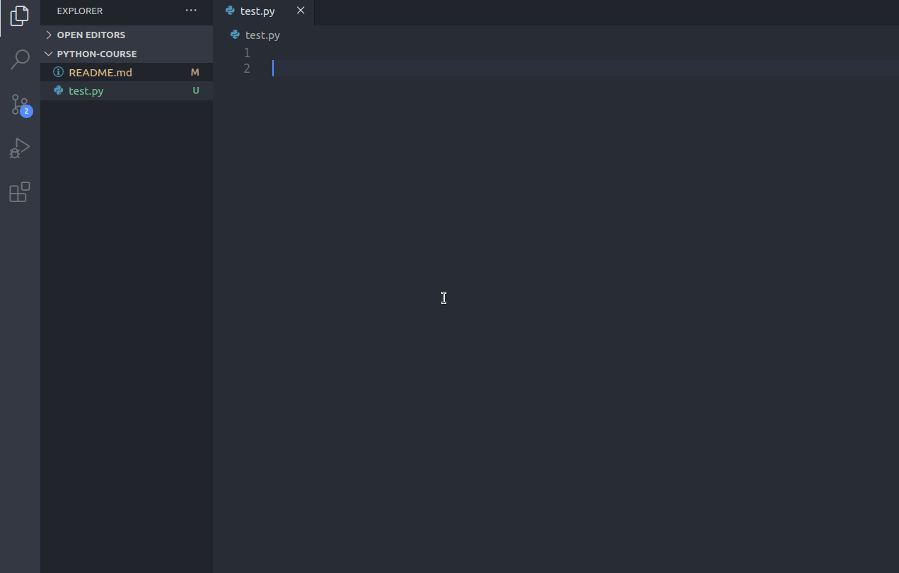

Lezione 14
Prerequisiti
Conoscenza di un linguaggio qualsiasi OOP come C++ o Javascript
Corso Python
Python è un linguaggio di programmazione di più “alto livello” rispetto alla maggior parte degli altri linguaggi, orientato a oggetti, adatto, tra gli altri usi, a sviluppare applicazioni distribuite, scripting, computazione numerica e system testing.
Ideato da Guido van Rossum all’inizio degli anni novanta, il nome fu scelto per la passione dello stesso inventore verso i Monty Python e per la loro serie televisiva Monty Python’s Flying Circus ed è spesso paragonato a Ruby, Tcl, Perl, JavaScript, Visual Basic o Scheme
Installazione e setup
Collegati alla pagina ufficiale di Python e installa la versione per il tuo sistema operativo.
Installazione e setup - Linux
Per i sistemi su base linux è sufficiente digitare i seguenti comandi:
sudo apt-get install python3
sudo apt-get install python3-pip
Nota: Il modulo pip di Python permette la gestione e l’installazione di moduli esterni
Per verificare la corretta installazione dell’interprete python digitare da terminale python3. In questo modo apriremo inoltre la shell interattiva di python in cui sarà possibile inserire direttamente del codice ed avere una risposta simultanea

Configurazione di un IDE
Un ottimo ambiente di sviluppo per Python è Pycharm.
Per questo corso ho preferito non utilizzare un IDE specifico come Pycharm ma uno con un target più ad uso generale come Visual Studio Code con l’ausilio di un’estensione che possa supportare gli emmet (abbreviazioni intelligenti) per il linguaggio python e opzioni per il debug del codice. L’estension che ho installato si chiama Python ed è quella che riporto nell’immagine animata qua sotto.
